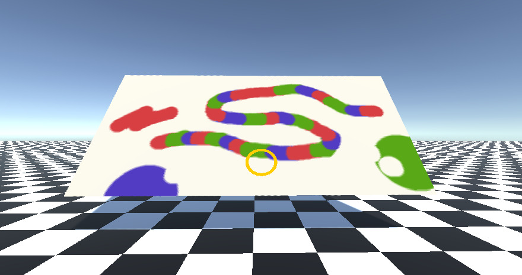

I have been developing games and demos in third-party engines on and off since I was a kid. While I most enjoy working in teams as a programmer and have the most experience doing gameplay and graphics programming in engines, due to both passion and necessity I have done plenty of solo work where I filled all game development roles. Unity is my go-to third party engine for any real-time game or demo that I need completed quickly, but I have also worked with UE4 and Godot for game jams and personal projects in the past. My most recent work with third party engines was the development of educational games and simulations for my alma mater.